| Satuan Pendidikan | SMKN 1 GARUT |
|---|---|
| Mata Pelajaran | Dasar-Dasar Pengembangan Perangkat Lunak dan Gim |
| Kelas/Fase | X / Fase E |
| Alokasi Waktu | 2 × 45 menit |
Setelah menyelesaikan LKPD ini, peserta didik mampu: (1) membedakan String dan Number; (2) menjelaskan bahwa prompt() menghasilkan String; (3) menggunakan Number() dan String(); (4) menganalisis kesalahan akibat tipe data; dan (5) membuat program input dan perhitungan sederhana.
Jangan jalankan terlebih dahulu. Prediksikan hasil:
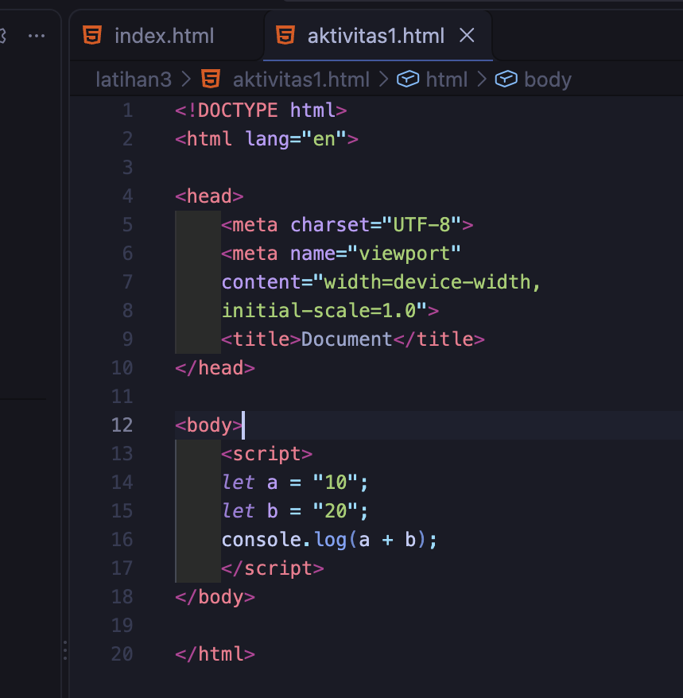
| Pertanyaan | Jawaban |
|---|---|
| Apa output program? | 1020 |
| Mengapa hasil tersebut terjadi? | Karena a dan b bertipe String (tekst). SehinggaOperator "+" pada String melakukan yang seharusnya di lakukan pada variabel berisi teks, akhirnya sistem tidak melakukan penjumlahan matematika. |
| Apakah a dan b bertipe Number? | Tidak. Karena pada pendeklarasian keduany adi apit oleh tanda kutip. |
Uji sekarang. Apakah prediksimu benar? Jelaskan.
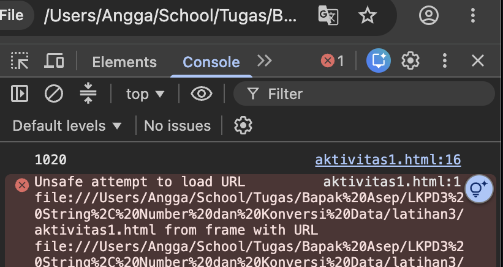
Ya, prediksi benar. Outputnya adalah string "1020", bukan angka 30. Ini membuktikan bahwa tipe data menentukan apa yang akan dilakukan oleh sistem pada operator.
Jalankan:
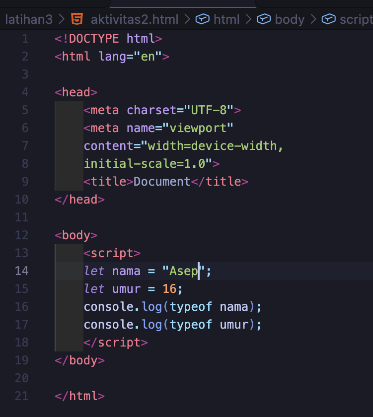
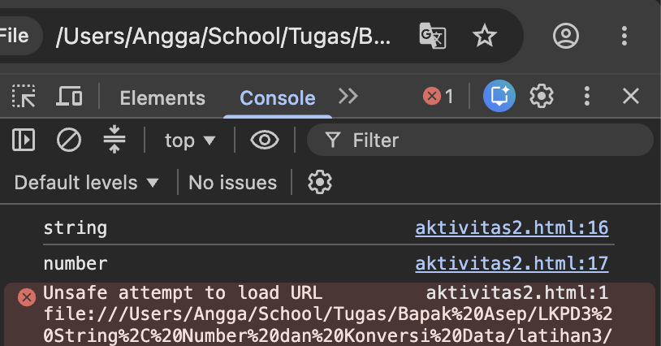
| Variabel | Prediksi | Hasil typeof | Kesimpulan |
|---|---|---|---|
| nama | string | string | Bertipe String (teks) |
| umur | number | number | Bertipe Number (angka) |
String adalah data teks yang pada pendeklrasian diapit oleh tanda kutip. Number adalah data numerik. Operator + pada String menggabungkan teks, sedangkan pada Number melakukan penjumlahan. 'typeof' digunakan untuk mengecek tipe data suatu variabel.
Perbaiki program agar menghasilkan 30. Gunakan Number():
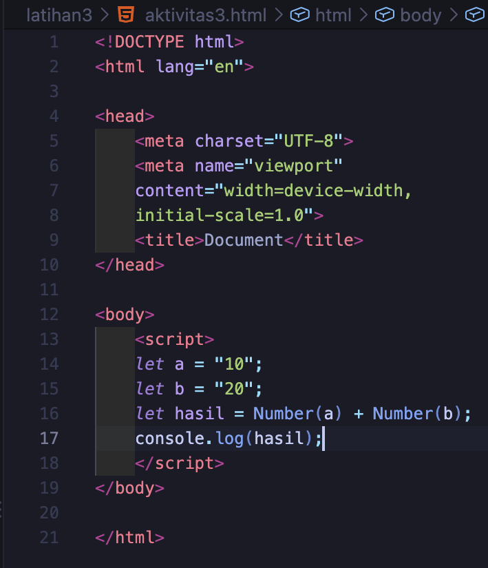
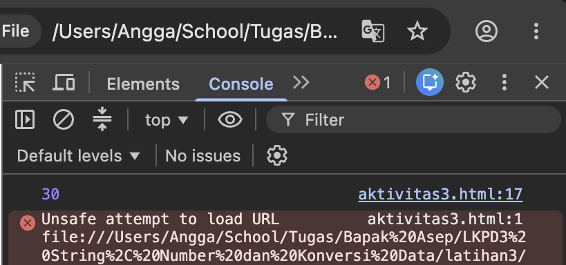
Buat program yang meminta harga barang dan jumlah barang melalui prompt(), mengubah keduanya menjadi Number, lalu menghitung total harga.
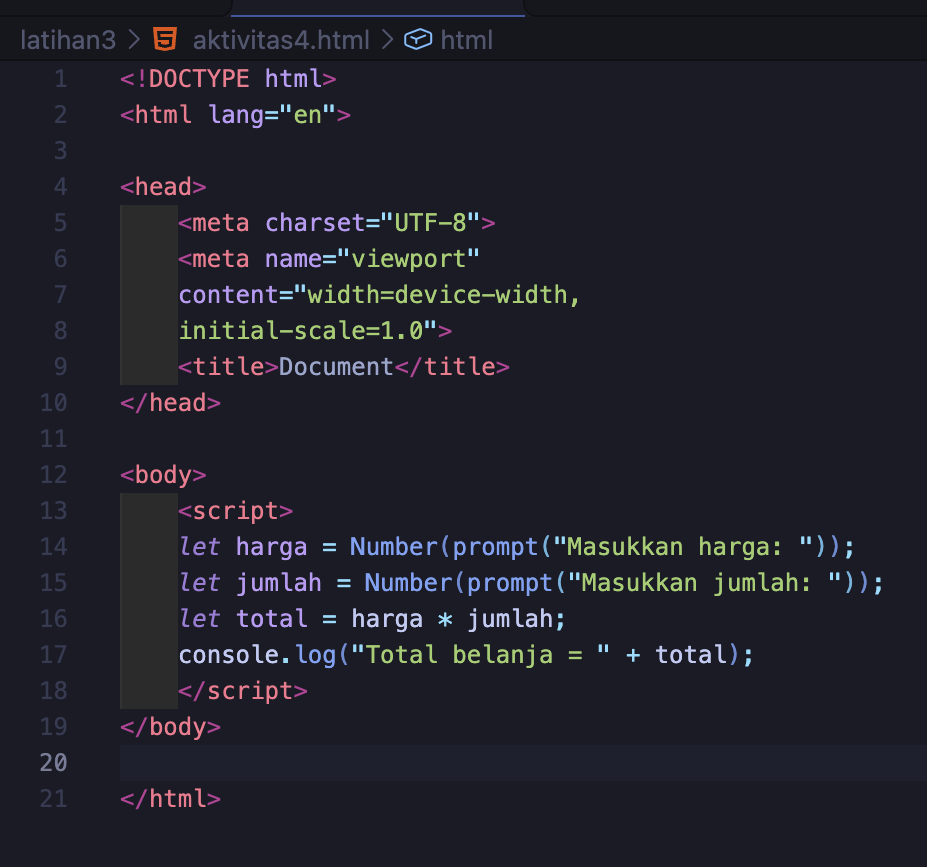
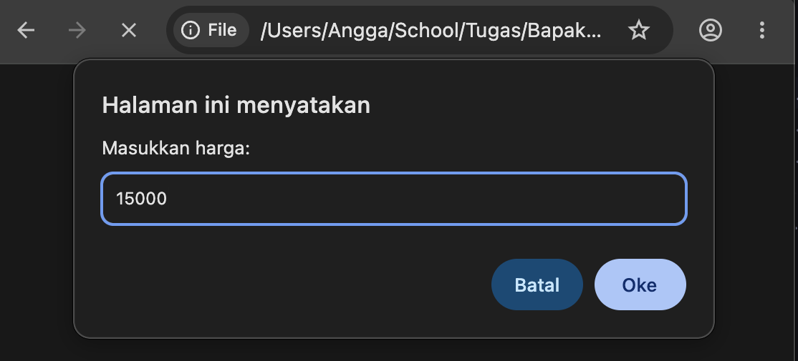
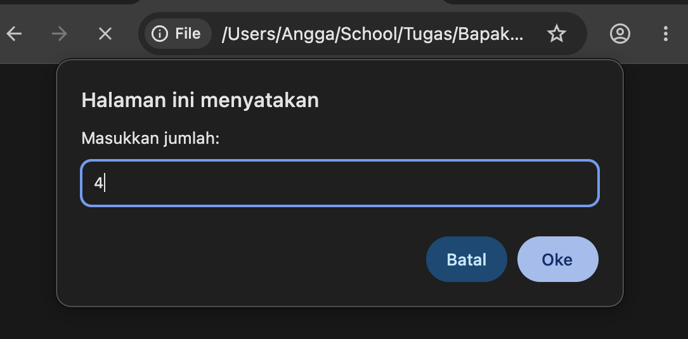
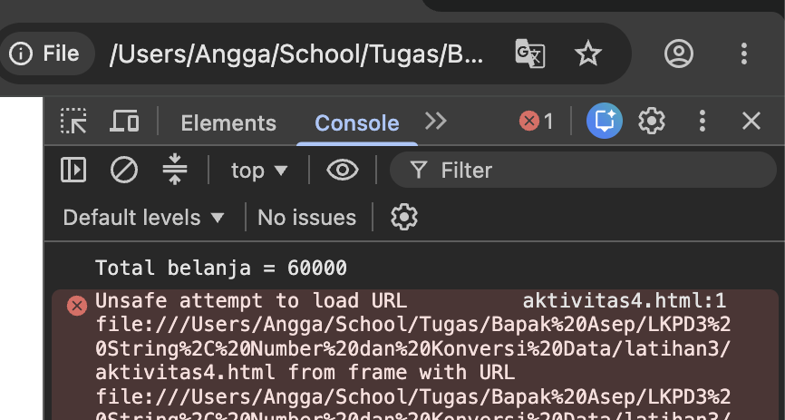
| Input Uji | Nilai |
|---|---|
| Harga | Rp 15000 |
| Jumlah | 4 |
| Total seharusnya | Rp 60000 |
| Total program | Rp 60000 |
Buat program dengan input nilai tugas, UTS, dan UAS. Konversikan semua input menggunakan Number(), lalu hitung rata-rata dengan rumus (tugas + UTS + UAS) / 3.
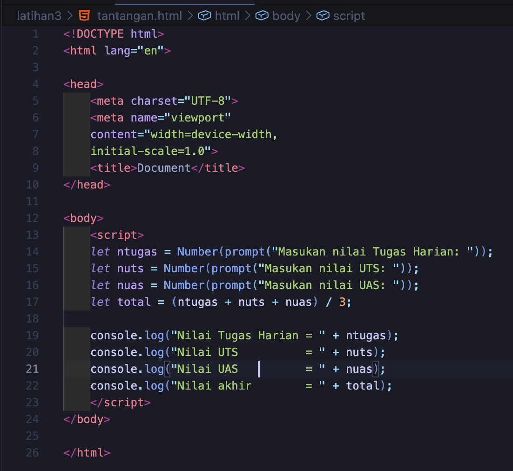
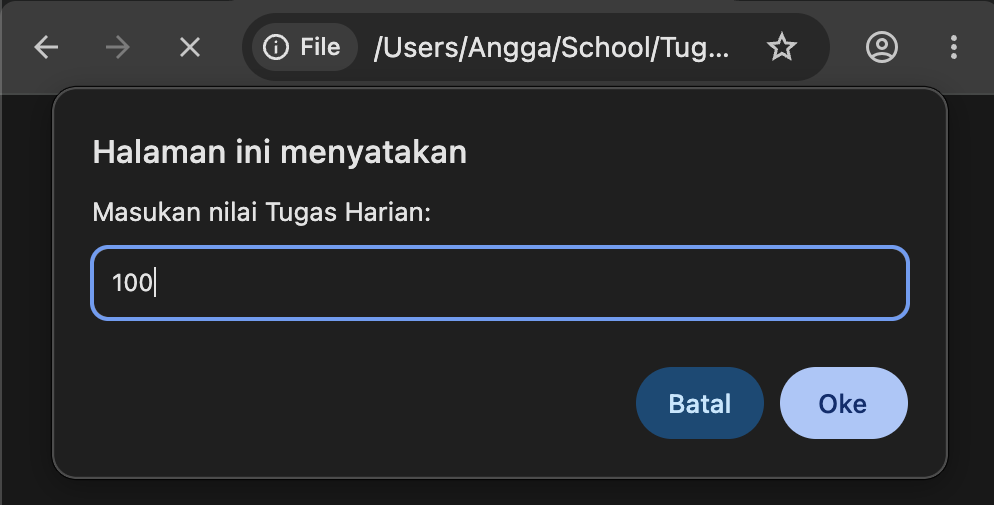
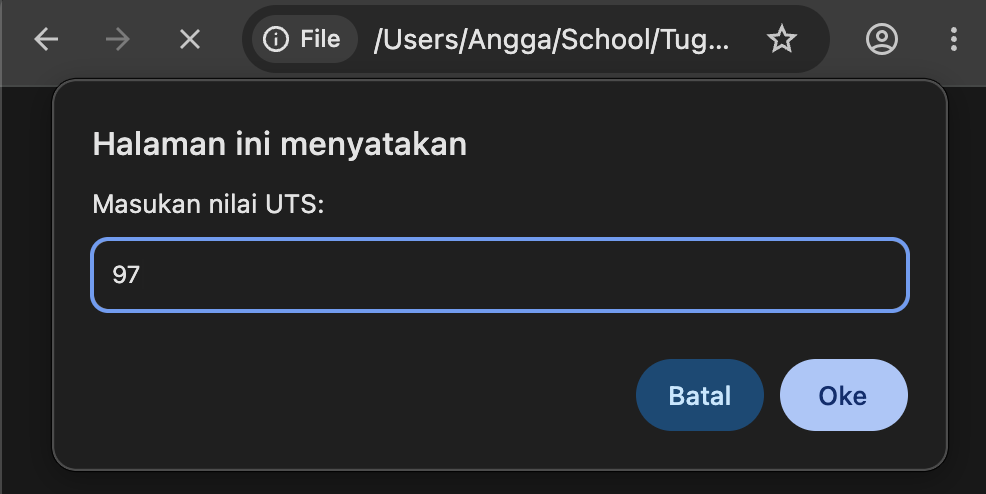
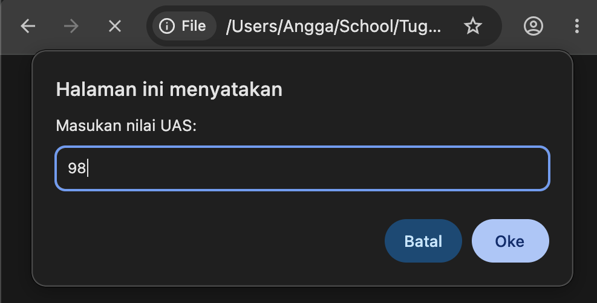
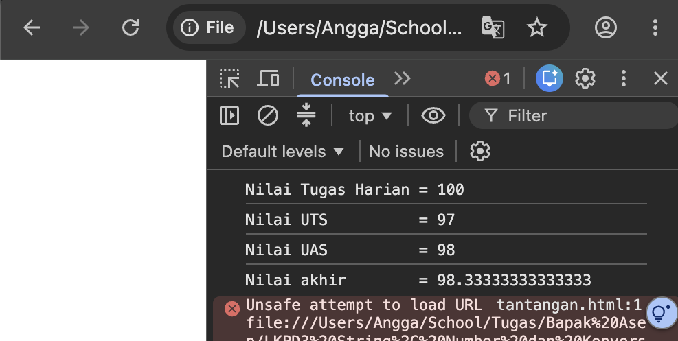
| Pertanyaan | Jawaban |
|---|---|
| Mengapa prompt() perlu dikonversi jika hasilnya ingin dihitung? | Karena prompt() selalu menghasilkan String atau teks. Sehingga pada hasilnya akan menampilkan teks, untuk melakukan perhitungan aritmatika, nilai harus dikonversi menjadi Number terlebih dahulu dengan Number() |
| Apa perbedaan "10" dengan 10? | "10" bertipe data String (teks), sedangkan 10 bertipe data Number (angka). Operasi + pada String menghasilkan penambahan teks atau concatenation, sedangkan pada Number akan menghasilkan penjumlahan. |
| Apa yang terjadi jika lupa Number()? | Akan terjadi concatenation penambahan teks. Contoh: "6" + "7" menghasilkan "67", bukan 13. Program tidak melakukan perhitungan yang diinginkan. |
Pair: Bandingkan jawaban dengan teman. Apakah sama? Mengapa bisa berbeda?
Jawaban saya dengna teman sebangku saya sama, mungkin perbedaanya dari cara penjelasan yang berdasar pada pemahaman masing masing
Share: Sampaikan satu temuan penting kepada kelas.
Temuan penting: Ternyata variable yang isinya data teks tapi berupa angka, tetap bisa diperlakukan dengan operasi matematika, tetapi harus dikonversi terlebh dahulu menggunakan Number ()
Penggunan prompt (), menarik
| Pernyataan | Ya | Belum |
|---|---|---|
| Saya dapat membedakan String dan Number. | ||
| Saya memahami prompt() menghasilkan String. | ||
| Saya dapat menggunakan Number(). | ||
| Saya dapat menggunakan String(). | ||
| Saya dapat menemukan kesalahan tipe data. | ||
| Saya dapat membuat program input dan hitung sederhana. |
| Aspek | 4 — Sangat Baik | 3 — Baik | 2 — Cukup | 1 — Perlu Bimbingan |
|---|---|---|---|---|
| Tipe data | Menjelaskan dan memberi contoh. | Membedakan String/Number. | Masih ada kekeliruan. | Belum memahami. |
| Konversi | Tepat dan mandiri. | Benar dengan sedikit arahan. | Beberapa kesalahan. | Belum mampu. |
| Program | Berjalan benar dan rapi. | Sedikit kesalahan. | Berjalan sebagian. | Belum berjalan. |
| Pemecahan masalah | Menemukan dan memperbaiki error. | Mampu dengan sedikit bantuan. | Perlu banyak bantuan. | Belum mampu. |
______________________________________________________________
______________________________________________________________